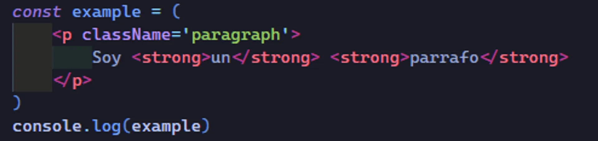
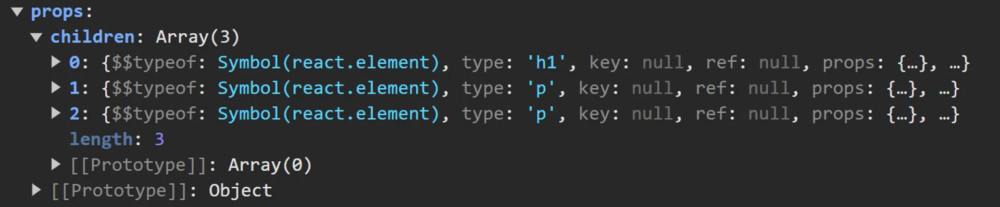
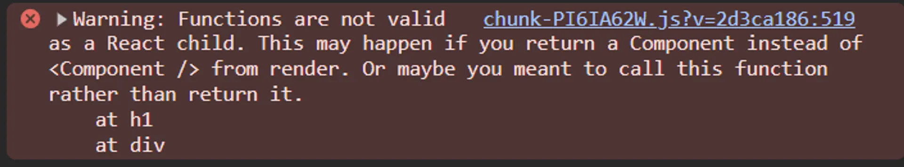

Entre las etiquetas de apertura < > y cierre de un nodo < /> podemos colocar sus nodos hijos, en inglés children, por ejemplo, si sustituimos nuestro elemento "img" por un "div" podemos colocar entre su etiqueta de apertura y cierre tantos hijos como queramos.
Los children son lo que se coloca entre las etiquetas de apertura y cierre de un componente. Los children se pasan al componente como una propiedad especial (props.children).
Al guardar esto, podemos ver que ha encerrado todo en () y esto evidentemente lo ha hecho prettier.
¿Por qué se pone entre paréntesis una etiqueta que ocupa múltiples líneas?
Esto se hace así para mantener una jerarquía visual, si nosotros borramos los paréntesis () realmente esto puede funcionar, pero estamos perdiendo esa jerarquía, esa indentación que nos permite conocer rápidamente que abarca esta etiqueta, cual es su etiqueta raíz, etc.
Se pierde esa jerarquía al eliminar los paréntesis, es más complicado de entender.
Entonces siempre y cuando que nuestra etiqueta JSX ocupe más de una línea se deben poner los paréntesis ().
Si nuestra etiqueta solo ocupa una línea no es necesario poner los paréntesis ().
Hasta este punto podemos ver que JSX y HTML no se diferencian demasiado, pero realmente JSX es un lenguaje de plantillas.
Expresiones evaluadas
Lo que podemos hacer dentro de los children es poner expresiones evaluadas.
¿Que són las expresiones evaluadas?
Es toda expresión de JavaScript que termina devolviendo un valor.
Estas expresiones se colocan dentro de llaves {}.
Veamos algunas formas en las que podemos encerrar valores dentro de estas llaves.
Estás no son todas las formas en que podemos poner expresiones evaluadas, pero nos sirven para visualizar su comportamiento y poder verlo dentro de la consola del navegador.
Pero antes de continuar primero explicaremos un poco de la propiedad props.
Propiedad props
Ejecutamos nuestro servidor de desarrollo.
npm run dev
Miraremos en que se transforma una etiqueta autocerrada y una con hijos.
La única diferencia está en en la propiedad props del componente:
La propiedad props es un objeto que contiene todos los datos o atributos que se pasan a un componente desde su etiqueta JSX.
Comportamiento
Cuando el componente es autocerrado, las props únicamente incluyen los atributos del elemento.
Si el componente tiene hijos, la propiedad props también incluirá una propiedad especial llamada children, que almacena los elementos hijos.
Como mencionamos en la introducción children es una propiedad especial que guarda dentro los elementos que se encuentran dentro de las etiquetas de apertura y cierre.
Cualquier cosa entre las etiquetas de apertura y cierre será accesible dentro del componente como props.children. Los children pueden ser:
Un solo elemento
Un array de elementos si tienes múltiples hijos, por ejemplo, varios párrafos o divs.
Texto plano o incluso expresiones evaluadas.
Todas estas diferencias las veremos con claridad.
Propiedad props en una etiqueta autocerrada o simple
Nos referimos a una etiqueta simple, cuando esta no contiene hijos si no que es única.
Una etiqueta autocerrada no necesita una etiqueta de cierre y pueden escribirse como <tag /> o simplemente <tag>
A continuación una pequeña lista de las etiquetas autocerradas más utilizadas.
<br> - Inserta un salto de línea.
<hr> - Inserta una línea horizontal (usualmente un cambio de temática o separación).
<img> - Inserta una imagen.
<input> - Define un campo de entrada de datos.
<source> - Especifica varios recursos multimedia (usado en <video> o <audio>).
Como podemos observar cuando la etiqueta es autocerrada, la propiedad props que ya sabemos que es un objeto, contiene solo los atributos de la etiqueta.
Y como la propiedad children no existe pasa a ser undefined.
Si ponemos una expresión evaluada como valor de un atributo, simplemente se evalua la expresión y se muestra con el valor devuelto.
Propiedad props en una etiqueta con hijos
Miraremos la propiedad props cuando la etiqueta contiene hijos.
Cuando tenemos hijos dentro de una etiqueta, en el objeto props se agrega una propiedad especial llamada children que en este ejemplo contiene un array de objetos que vienen siendo los hijos.
Ahora veamos cuando combinamos atributos.
Podemos ver que en el objeto props conviven los atributos y la propiedad children.
Veamos este otro ejemplo.

Valores en children
Como se mencionó los children pueden ser:
Un solo elemento
Un array de elementos si tienes múltiples hijos, por ejemplo, varios párrafos o divs.
Texto plano o incluso expresiones evaluadas.
En este subtitulo miraremos estos valores en children, pero lasexprexiones evaluadas las miraremos más a fondo en el siguiente subtitulo.
Etiqueta con un solo hijo
Si hay un solo hijo (texto o elemento JSX): la propiedad children será ese valor directamente.
Un solo hijo - texto plano
Un solo hijo - Elemento HTML
Guarda ese único hijo como objeto.
Etiqueta con múltiples hijos
Si hay múltiples hijos (varios nodos JSX): en este caso, children será un array que contendrá todos los elementos hijos.
Etiqueta con múltiples hijos JSX
Miraremos uno de los ejemplos anteriores.
Como podemos ver, cuando tenemos múltiples hijos JSX, la propiedad children contendrá un array de elementos.
La propiedad children será un arraysolo si hay múltiples hijos. De lo contrario, será un valor único o estará undefined si no hay hijos.
A continuación explicaremos más a fondo el comportamiento de children, cuando tiene que ver con expresiones evaluadas.
Expresiones evaluadas en children
Tenemos uno de los ejemplos anteriores, donde ocupamos expresiones evaludas.
Si desplegamos children, que en este caso es un array de elementos, miraremos que cada objeto es una de las etiquetas que se encuentran dentro de la etiqueta padre.

Cada uno de estos objetos (etiquetas) contiene las mismas propiedades que React maneja con un nodo.
Si desplegamos una de estas etiquetas, veremos la propiedad props, que también incluye la propiedad children, y esta última contiene los hijos de esa etiqueta, en este caso, texto plano.
Si somos observativos nos habremos dado cuenta que la propiedad children del objeto que desplegamos, su array está dividido por 2 elementos.
['Curso de ', 'React']
Veremos un poco como funciona esto, viendo que se renderiza para cada uno de estos children.
Lo primero que tenemos que tener en mente, es que al final nuestro código terminará siendo HTML y en HTML no podemos poner cualquier cosa como hijo, sino simplemente etiquetas o un string.
Entonces, independientemente del resultado, todo nuestro código deberá transformarse a esta sintaxis válida.
Expresión evaluada con tipos de datos
Vamos a ver, como se transforma cada uno de los tipos de datos que tenemos en JavaScript.
Tipos String y Number
En el primero de los casos veremos los tipos de dato String y Number, que son los casos más fáciles evidentemente, ya que se transforman directamente a un texto y a un número.
En el caso de un Number al momento de renderizarse a la pantalla, se convierte en un String, pero si lo tratamos desde el código o consola seguirá siendo un Number.
Tipos boolean, null, undefined
Miraremos lo que pasa al renderizar estos tipos de datos.
Como podemos observar este tipo de datos al renderizarse, se terminan transformando a un String vacio.
Entonces estos 3 tipos de datos no se tranforman en nada, no se renderizan en nada.
Conocer esto, es de gran utilidad para cuando estemos hablando del renderizado condicional más adelante, porque, en muchas expresiones lo que haremos es devolver null en el caso de que no nos interese pintar nada y otra cosa en el caso de que si.
Esto nos permitirá gestionar nuestras etiquetas de una forma mucho más eficiente.
Tipo Object literal
Cuando queramos renderizar un Objeto literal miraremos algo curioso.
Podemos ver que no se renderiza nada.
Esto se debe a que tenemos un error, y si vamos a la consola podremos verlo.
Nos dice que no puede generar ninguna de las expresiones que devuelva un objeto. Esto no es del todo cierto, ya que veremos que si que hay un tipo de objetos que podemos pasar como children , ¿Cúal será?, pues evidentemente una etiqueta un nodo de este Virtual DOM.
Nodo del Virtual DOM
Veremos que un nodo (etiqueta) del Virtual DOM si que se puede renderizar al ponerse como expresión evaluada.
Entonces las etiquetas son el único tipo de objetos que podemos pasar como children (hijos), cualquier otro objeto nos generará directamente un error.
Funciones
¿Qué pasa con las funciones?, miremos los ejemplos.
Función sin ejecutar
Como podemos ver, si que se renderiza una parte, pero la parte de la función no se muestra.
Si checamos la consola podremos ver un warning en lugar de un error.
Nos dice que las funciones no son válidas como hijos de React, pero no nos da un error, sino un warning.
Esto pasa porque React interpreta que se nos ha olvidado ejecutar la función.
Función ejecutada
Si nosotros ejecutamos la función podremos que es un objeto válido, ya que está devolviendo una etiqueta.
Arrays
El último de los casos del que tenemos que hablar es de los arrays.
Los arrays son un tipo bastante especial dentro de JSX y que se interpreta como una sucesión de hijos, ¿Qué quiere decir una sucesión de hijos?, pues lo veremos muy sencillamente en el siguiente ejemplo.
Cuando JSX detecta un array, React lo que intenta es concatenar cada uno de los elementos del array y así pintar la versión final.
¿Y como se concatenan los elementos del array?, pues siguiendo las mismas reglas que tenemos hasta ahora, es decir, si agregamos los tipos de datos boolean, null y undefined, miraremos que no pintará nada, los ignorará porque ya sabemos que no renderizan nada, solo concatenará aquellos elementos del array que se puedan concatenar, que puedan generar una versión final.
Podemos ver no renderiza estos tipos de datos y concatena aquellos elementos que puedan generar una versión final.
Si intentamos poner un simple objeto miraremos que no renderizará nada, ya que como vimos anteriormente un objeto literal no se puede renderizar y nos devolverá un error.
Como podemos ver, se siguen las mismas reglas, y si ahora ponemos una función en lugar de un objeto, nos aparecerá un warning diciendo que las funciones no son válidas como hijos de React.
Como podemos ver, se renderiza como habiamos visto anteriormente a diferencia de un objeto que no renderiza nada.
Pero nos muestra un warning diciendo que las funciones no son válidas como hijos de react.

Cuando nosotros ponemos un array como expresión evaluda, lo que estamos diciendole a React es que pinte una sucesión de elementos y dependerá de cada uno de esos elementos lo que se genere como versión final, cada uno de esos elementos sigue todas las reglas que hemos visto hasta ahora para generar la versión final.
Si ponemos una etiqueta como elemento del array, miraremos que si se concatenará, ya que recordemos que el único objeto que permite como hijos es una etiqueta o un nodo.
Como podemos observar esta concatenando la etiqueta con el resto de los elementos del array.
Como podemos ver el código nos está marcando como error el poner una etiqueta como elemento de array y esto se debe por una serie de reglas que debemos de incluir y que veremos a lo largo del curso.
Pero hay que quedarnos con esto, que pintar un array es como poner una sucesión de etiquetas de la siguiente forma.